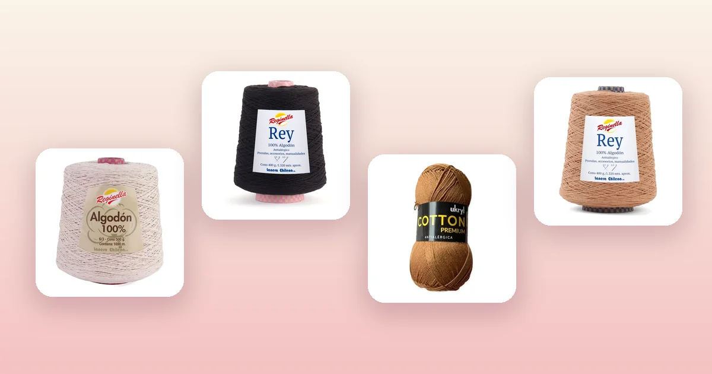

Proyectos de crochet
Cómo tejer un bolso a crochet paso a paso
Un bolso tejido a mano es de esos proyectos que se usan todos los días y que siempre reciben cumplidos. La clave está en dos cosas: usar algodón, que da firmeza, y tejer más apretado de lo habitual. En esta guía aprenderás a armar la base ovalada, subir el cuerpo en punto bajo, tejer asas que no se estiren y darle terminaciones prolijas.

Materiales para tejer tu bolso
Un bolso necesita un tejido firme que aguante peso sin deformarse, y ahí el algodón es el mejor aliado. Necesitas:
- Un cono de algodón Reginella es la opción más rendidora: al ser una bobina continua tejes todo el bolso sin empalmar hebras. Por ejemplo Cono de Algodón Crudo Reginella, Cono de Algodón Negro Reginella o Cono de Algodón Damasco Reginella. Revisa todos en conos de algodón Reginella.
- O bien 3 a 4 ovillos de hilo de algodón si prefieres combinar colores: mira hilo de algodón Ukryl Cotton Premium, por ejemplo Hilo de Algodón Tostado Ukryl o Hilo de Algodón Negro Ukryl.
- Un ganchillo más pequeño de lo habitual para el grosor de tu hilo: eso es lo que da firmeza al tejido y evita que el bolso se estire con el uso.
- Tijeras y aguja lanera. Opcional: un forro de tela y aguja de coser.
Cómo se construye un bolso a crochet
Casi todos los bolsos a crochet siguen la misma lógica en tres partes:
- La base: un óvalo o un círculo plano que define el fondo del bolso.
- El cuerpo: vueltas rectas, sin aumentos, que suben desde la base y forman las paredes.
- Las asas: se tejen al final, en la boca del bolso.
Es la misma lógica del gorro que vimos en la guía de cómo tejer un gorro a crochet: una parte que crece y otra que sube recta. La diferencia es que aquí la base es ovalada y el tejido es mucho más firme.
Paso 1: la base ovalada
Usaremos punto bajo, que es el más firme. Para un bolso de unos 30 cm de ancho:
| Vuelta | Instrucciones | Total |
|---|---|---|
| Cadena base | Teje 30 cadenetas | 30 |
| 1 | 1 pb en la 2ª cadeneta y en cada una hasta el final; 3 pb en la última; sigue por el otro lado de la cadena con 1 pb en cada una; 2 pb en la primera | 64 |
| 2 | 1 pb en cada punto, agregando 2 aumentos en cada extremo del óvalo | 68 |
| 3 | 1 pb en cada punto, con 2 aumentos en cada extremo | 72 |
| 4 a 6 | Repite el mismo patrón, aumentando 4 puntos por vuelta en los extremos | 84 |
Detente cuando la base mida el ancho y el fondo que quieras: para un bolso de diario, unos 30 × 12 cm funcionan bien. Apoya la base en una mesa: debe quedar plana. Si se ondula, hiciste demasiados aumentos; si se curva hacia arriba como un plato, hicieron falta.
Paso 2: el cuerpo del bolso
- Cuando la base esté lista, deja de aumentar.
- Teje 1 punto bajo en cada punto, vuelta tras vuelta, en redondo y sin girar la labor.
- Sigue hasta que el bolso tenga el alto que quieras: entre 25 y 30 cm para un bolso de diario.
- Marca el inicio de cada vuelta con un marcador para no perder la cuenta.
Como tejes siempre en la misma dirección, verás que el tejido forma una pequeña diagonal: es normal en el tejido en espiral y no afecta al resultado.
Paso 3: las asas
La forma más simple de hacer asas es dejando aberturas en la última vuelta:
- En la última vuelta, teje normal hasta llegar al punto donde quieres que empiece un asa.
- Teje 20 cadenetas al aire y salta 20 puntos de la vuelta anterior; continúa con puntos bajos.
- Repite en el lado opuesto del bolso, para que las dos asas queden simétricas.
- Teje 2 o 3 vueltas más de punto bajo sobre toda la boca del bolso, incluidas las cadenetas de las asas, para reforzarlas.
- Remata, corta el hilo y esconde las hebras con la aguja lanera.
Terminaciones que marcan la diferencia
- Forro de tela: corta dos rectángulos del tamaño del bolso, cóselos entre sí y cose el forro por dentro de la boca. Evita que los objetos pequeños se salgan entre los puntos.
- Base reforzada: si vas a cargar peso, teje la base con hilo doble o cose una cartulina firme forrada en tela en el fondo.
- Bolsillo interior: teje un cuadrado pequeño (puedes usar la técnica del granny square) y cóselo al forro.
- Botón o cierre: cose un botón grande en un lado y teje una presilla de cadenetas en el otro.
Variaciones de bolso
- Bolso de playa: más grande y con tejido algo más suelto, en algodón crudo.
- Bolso pequeño o cartera: base de 15 cadenetas y cuerpo de 15 cm de alto, con asa larga de cadenetas para llevar cruzado.
- Bolso a rayas: cambia de color cada 4 o 6 vueltas del cuerpo, combinando colores de hilo de algodón.
- Bolso en chenille: queda más suave y con volumen, pero menos firme: úsalo solo para bolsos pequeños y de poco peso. Mira los colores de lana chenille.
Errores comunes al tejer un bolso
- Tejer demasiado suelto. Es el error más común: el bolso se deforma apenas le pones peso.
- Base ondulada o abombada. Señal de que hay demasiados o muy pocos aumentos. Corrígelo antes de empezar el cuerpo.
- Asas débiles. Si no las refuerzas con vueltas extra, se estiran con el uso.
- No marcar el inicio de vuelta. En un tejido de 80 puntos es muy fácil perderse.
Cuando termines tu bolso, revisa la guía de cómo lavar y cuidar la lana para saber cómo lavarlo sin que pierda la forma.